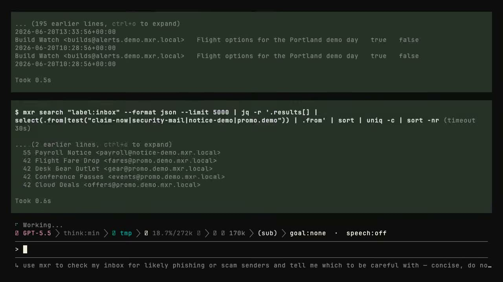

Talk to your coding agent about your email
I built mxr. It brings all your accounts into one local mailbox, so your agent can search years of mail locally, tell you what needs attention, and help you handle it.
mxr · "Mixer" · mxr.sh

Which emails should I be careful with?
The agent uses mxr to search my local mailbox, open the relevant threads, and report what deserves attention.

All my accounts, one local mailbox
Gmail, Outlook, Microsoft 365, and any IMAP account sync into SQLite on my machine. Tantivy indexes it for fast local search. I send through Gmail, Outlook, or any SMTP server.
Gmail, Outlook or Microsoft 365, and any IMAP account all feed provider adapters. The adapters write into SQLite, which is the one mail model on my machine, and SQLite builds the Tantivy local search index. Outbound mail leaves the adapters through Gmail, Outlook, or any SMTP server.
Search stays on the machine
Because the mailbox is already synced and indexed, a question starts with a fast local lookup. I don't notice the search. The only thing I wait for is the model.
I can analyse the whole mailbox at once
Every synced message body, sender, thread, timestamp, and attachment metadata is already in SQLite. mxr can answer questions across years of email without fetching messages one by one.
The agent uses the same CLI I do
A shell-capable agent discovers commands with --help, asks for JSON, and passes IDs from one command to the next. mxr also ships an MCP server for clients that prefer typed tools.
Drafting for one person
mxr retrieves the thread and adds local context from our previous emails, so the draft sounds like me writing to Maya.
>Find the latest thread with Maya, look at how I usually write to her, and draft a reply. Don't send it.
A draft is still a draft
Drafting stops at text. Sending is a separate operation that needs my command, a daemon policy check, and confirmation.
Drafting runs from mxr draft-assist to returned draft text and stops there. Sending is a second path: my explicit send command, then the daemon policy check, then confirmation, and only then the provider.
Data, never an instruction. It cannot authorise a send or redirect the task.
Close the TUI. Sync keeps going.
The agent comes and goes too. Every client talks to one mxr daemon and sees the same mailbox, search index, rules, and permission checks.
The TUI, CLI, web app, scripts, agent skill, and MCP server all connect to one point and continue into the mxr daemon, which holds sync, SQLite, Tantivy, provider adapters, and permission checks.
Try mxr with a synthetic mailbox
The demo creates an isolated two-account mailbox with 50,000 messages. It does not touch your real mxr data.
Keyboard
- → ↓ Space
- Next card
- ← ↑
- Previous card
- Home / End
- First / last card
- f
- Fullscreen
- t
- Switch theme
- ?
- Toggle this help